Manila
An Update on OpenStack's Shared File Services Program
May 18th, 2015
OpenStack Summit - Vancouver
Today's Presenters
| Dr. Bob Callaway | Sean Cohen | Mark Sturdevant |
|---|---|---|
| Principal Architect, NetApp | Principal Product Manager, Red Hat | Software Engineer, HP |
| Manila ATC | Manila Community Member | Manila Core Team Member |
Manila: The OpenStack Shared File Service Program
Bringing self-service, shared file services
to the cloud
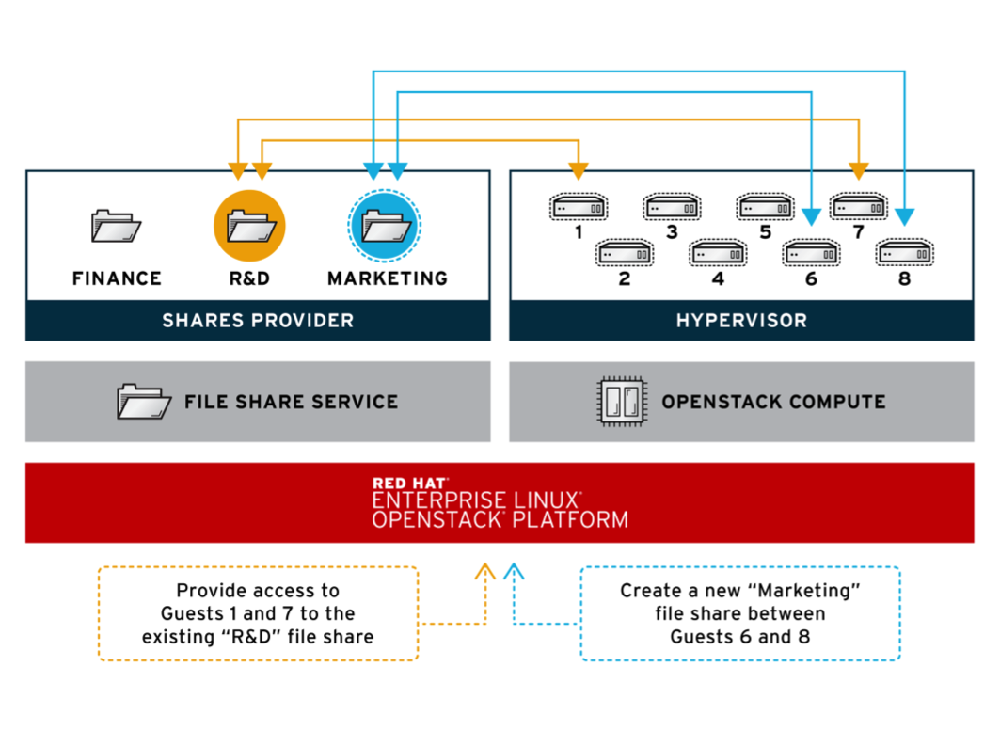
Who is involved in Manila?
Drivers
Drivers in blue are new in Kilo |
Contributors
|
|
Kilo Reviews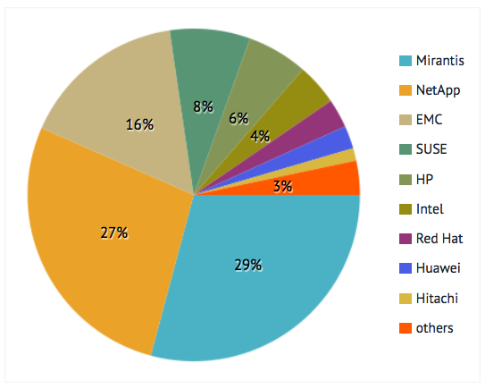 |
Kilo Lines of Code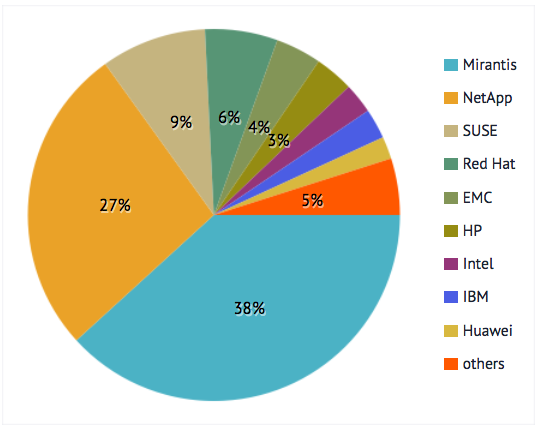 |
|
The age of cloud file services
- OpenStack Manila: June 2013
- Microsoft Azure Files: May 2014
- Amazon Web Services Elastic File Services: April 2015
| Storage Service | Amazon Web Services | Microsoft Azure | OpenStack |
|---|---|---|---|
| Object | S3 | Blob & Table Storage | Swift |
| Archival (Cold) storage | Glacier | Azure Backup | - |
| Block | Elastic Block Storage (EBS) | Blob Storage | Cinder |
| File | Elastic File Storage (EFS) | Azure Files | Manila |
Use Cases for Manila
- Big Data
- Manila’s HDFS native driver plugin
- Sahara integration
- Database as a service
- Trove integration
- Support legacy enterprise applications
- Cross-tenant data sharing
- On-Demand development and build environments
- Continuous Integration
- Hybrid Cloud shares
- External consumption of shares
- Migration of workloads to the cloud from on-premise file shares
Use Case: Manila for Standalone Shared File Services Management
An Open, Standard API for File System Provisioning and Management
- Replace homegrown or legacy systems
- Improve IT responsiveness by providing self-service share management
- Integrate Manila with existing automation frameworks through REST API or CLI
Manila can now operate in a variety of networking models
Supporting standalone deploments and tenant-scoped overlay networks
|
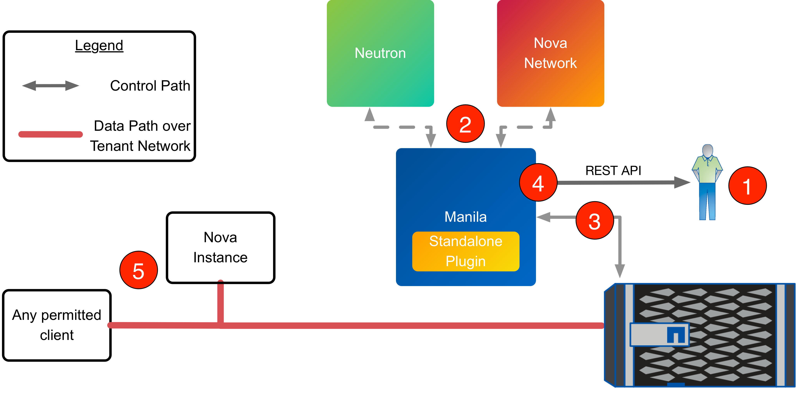 |
Manila pools support in Kilo
Exposes vendor-specific storage constructs from
heterogeneous systems through Manila API
|
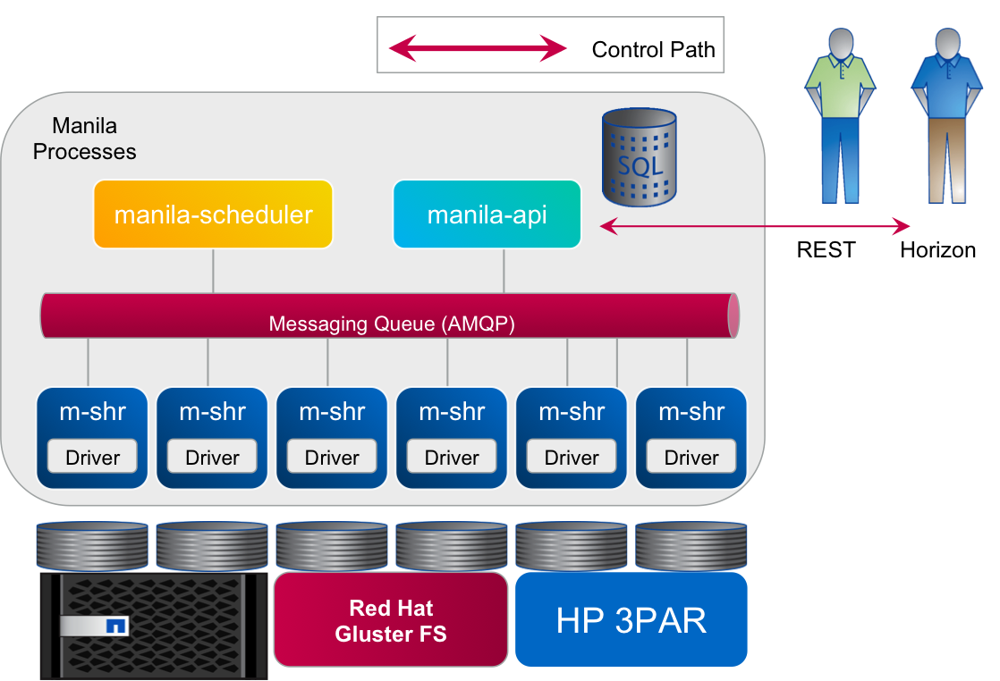 |
Use Case: Move Enterprise Applications to OpenStack
Move workloads to OpenStack clouds without rewriting them
| 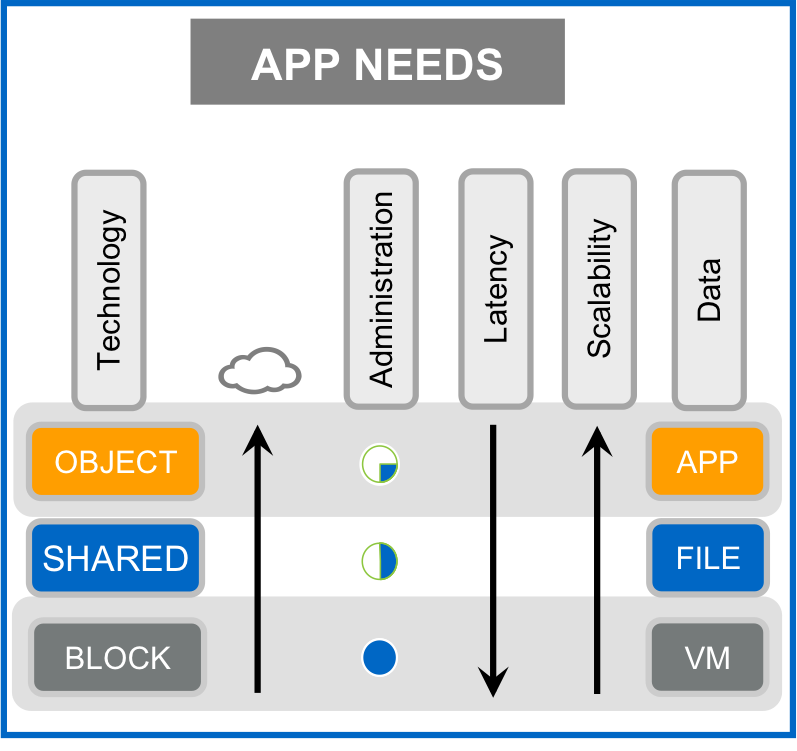 |
|
Deliver workload-aligned shared file storage offerings
Create a storage service catalog that maps the differentiated features of storage to Manila
| 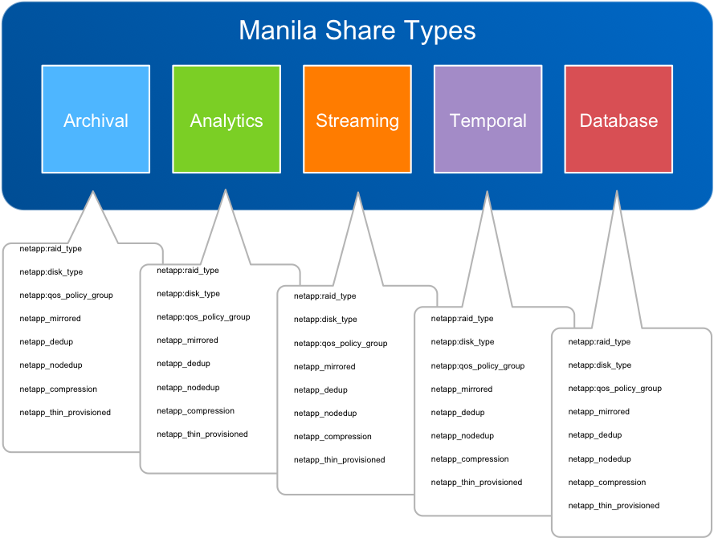 |
|
Devops / Continuous Integration
Speeding up large dev/test suites through parallel testing
Challenge
Solution
|
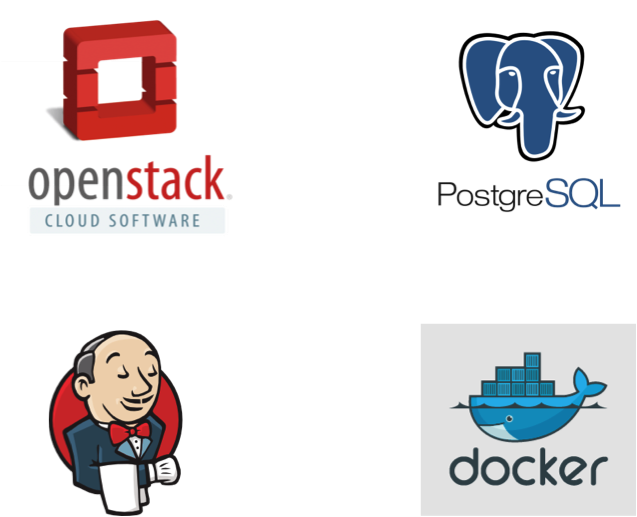 |
Use Case: NAS as a Service
Provide self-service and management for shared file systems
Deployment of OpenStack with Manila, integrated with Manila storage drivers to deliver self-service provisioning and lifecycle management of shares.
- Accelerated time for Shared File Systems being made available to lines of business thru self service.
- Increased Flexibility
- Self-Management of devops infrastructure.
- Increased Elasticity
- Liberty focus: Add the ability to expand a share (patch under review)
Use Case: Automation and Integration with Manila Open API
Build rich new services with integration to Manila
Challenge
Solution
|
Benefits
|
Heat with Manila
Adding shared file systems as first-class resources in Heat templates
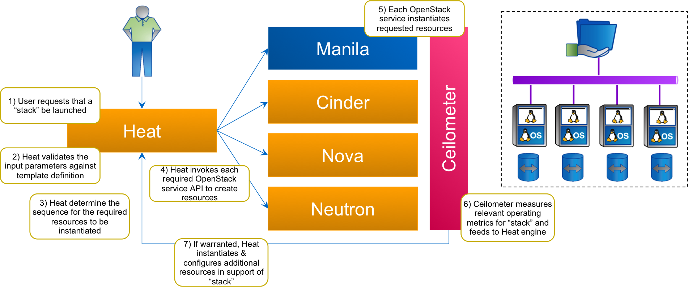Use Case: Database as a Service
Support different DBaaS topologies with Manila
- Ability to provide private cloud options for databases built on shared file systems
- Transparency and and coherent database management
- Simplification for devops
- Easy provisioning, and choice of storage features using share types
- Bring database applications into your private cloud with full visibility and control
- Integrate Manila shares with other OpenStack projects, such as Trove or Sahara
Other new features for Manila consumers
(and developers)
New in Kilo:
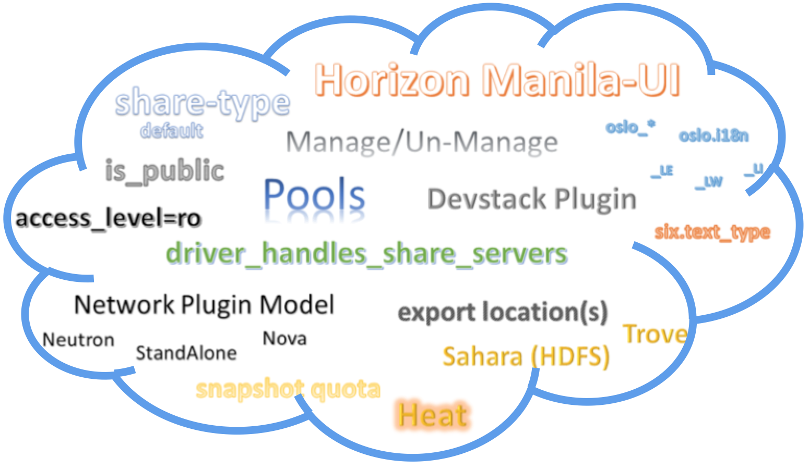Manila-UI
Horizon: The OpenStack Dashboard Project
- Became official for Kilo
- Is a Horizon sub-project
- Follows the current recommended integration model
| 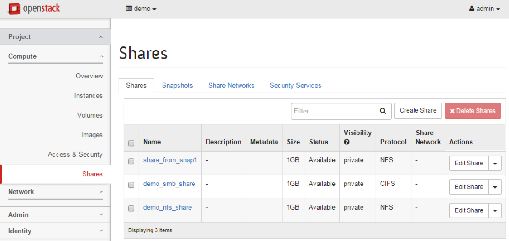 |
Maintained and reviewed jointly by the Manila and Horizon teams
|
Manila Devstack Plugin
|
Manila Share Manage / Unmanage
Bring existing shares into Manila
|
Planned work in Liberty and beyond...
Liberty Design Summit Topics
Wednesday and Thursday
|
|
Third party CI
Goal:
Specific Deadlines:
|
1. Silent → 2. Reporting→ 3. Voting
|
Mount Automation:
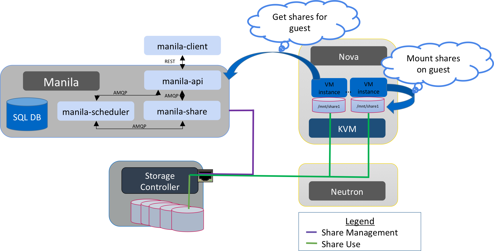
ReplicationConsistency Groups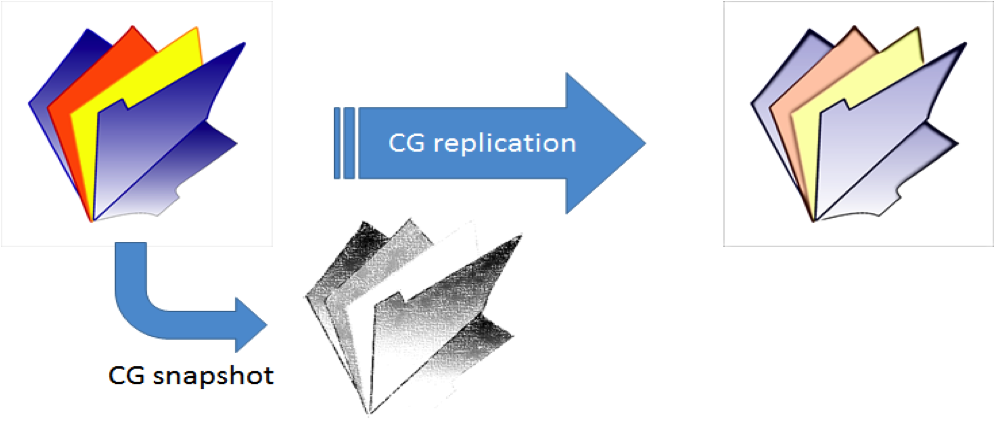 |
Example CG Snapshot Scenario:
|
Share migration
|
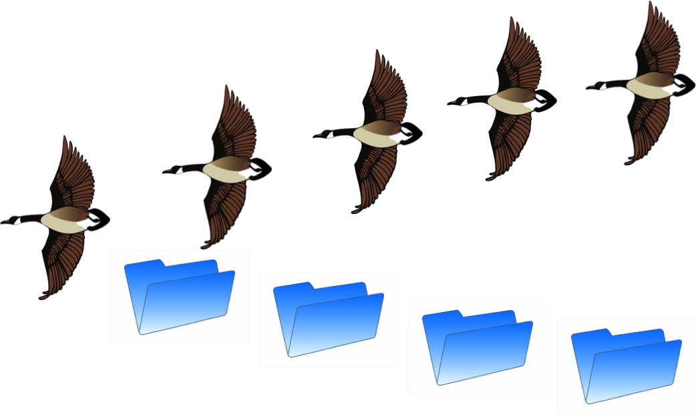 |
How to get started with Manila
|
Get Involved with Manila!
- https://github.com/openstack/manila
- https://github.com/openstack/python-manilaclient
- https://github.com/openstack/manila-ui
- https://wiki.openstack.org/wiki/Manila
- https://launchpad.net/manila
#openstack-manilaon IRC (Freenode)- Weekly meetings @ Thursday, 15:00 UTC
Manila Summit Sessions
|
|